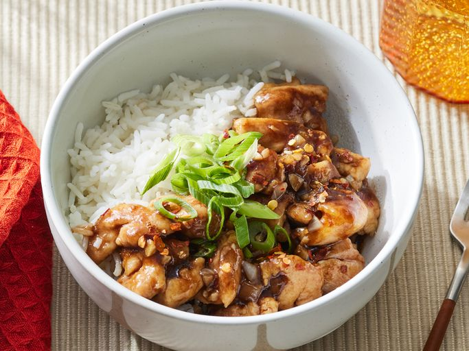

Bourbon Chicken Recipe

Bourbon chicken is a dish with New Orleans roots that's easy to make with chicken thigh pieces cooked in a sweet brown sugar, bourbon, ginger, garlic, and soy sauce glaze. Serve with rice for a restaurant-worthy meal.
Ingredients
- 1 1/2 pounds skinless boneless chicken thighs, cut in 1-inch pieces
- 2 tablespoons cornstarch, divided
- 2 tablespoons olive oil, divided
- 1/4 cup minced onion
- 2 cloves garlic, minced
- 1 teaspoon grated fresh ginger
- 1 tablespoon cider vinegar
- 2 cups cooked rice
- 2 green onions, sliced
Steps
- Gather ingredients
- Toss chicken with 1 tablespoon cornstarch in a medium bowl.
- Heat 1 tablespoon oil in a 12-inch skillet over medium-high heat; add chicken. Cook and stir until browned; transfer to a plate using a slotted spoon.
- Heat remaining 1 tablespoon oil in the same skillet. Add onion, garlic, and ginger; cook and stir until softened and fragrant, 1 to 3 minutes.
- Stir remaining 1 tablespoon cornstarch, soy sauce, broth, bourbon, brown sugar, vinegar, and crushed red pepper together in a small bowl.
- Add sauce mixture to the skillet; cook and stir until thickened and bubbly.
- Return chicken to the skillet. Cook and stir until coated in sauce and heated through, about 2 minutes.
- Serve over rice. Top with green onions.